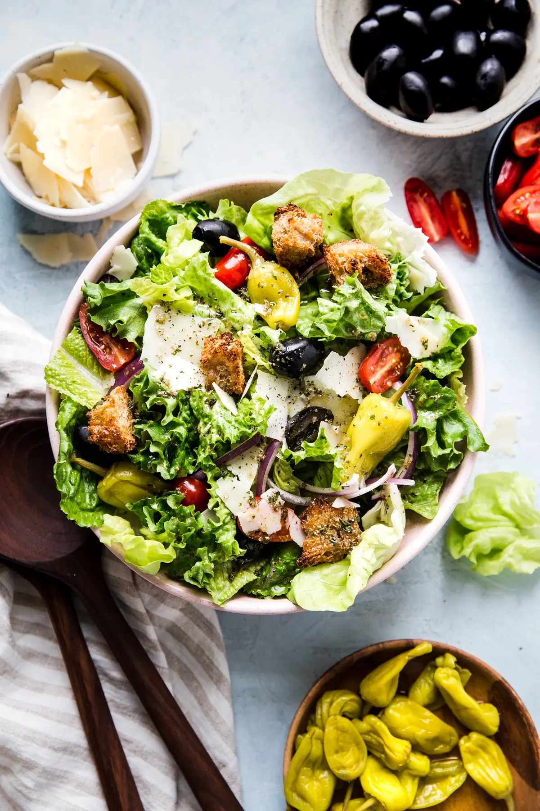

Italian Salad

Description
Ingredients
- 1 head Leafy romaine lettuce or 2 romaine hearts, roughly chopped
- 1/2 Medium red onion, thinly sliced
- 1/2 cup Grated, parmesan cheese
- 1 cup Peperoncini, whole or sliced
- 1/2 cup Black olives, sliced or whole
- 1 pint Cherry tomatoes
- Freshly ground pepper, to taste
- Croutons, store bought or homemade
Italian Dressing
- 1 tsp Garlic powder
- 1 tsp Dried oregano
- 1 tsp Dried basil
- 1/2 tsp Sea salt
- 1/2 cup Extra virgin olive oil
- 2 tbsp Red wine vinegar
Steps
- To make the dressing place all the ingredients in a jar with a tight fitting lid. Shake vigorously until all ingredients are combined. Store in refrigerator for a week. Shake before each use.
- To make the salad, place all ingredients in a large salad bowl. Drizzle with Italian dressing and toss to combine.